欧游札记之哈布斯堡荣光(Day5CK小镇—维也纳)

Day5 CK小镇——维也纳
第二天一早起来在别墅小餐厅与不知从哪里冒出来的几位住客同胞一起吃了个简单的自助早餐，满血复活。老天爷也非常给脸，民宿周边的别墅在蓝天白云映衬下尤为熠熠生辉。尽管住在镇子外围，但CK小镇本身就不大，所以没走几步路便踏入了这座号称欧洲最漂亮小城、92年被列入世界文化与自然双重遗产的人生必访之城。从地图上看小镇被伏尔塔瓦尔河的U字型河套区分隔成了北边山丘的克鲁姆洛夫城堡区和河套中央被河水环绕的旧城区。地形地貌与拉丁文和老德文中“克鲁姆洛夫”所代表“曲折的草地或水面旁的地方”意思十分贴切。 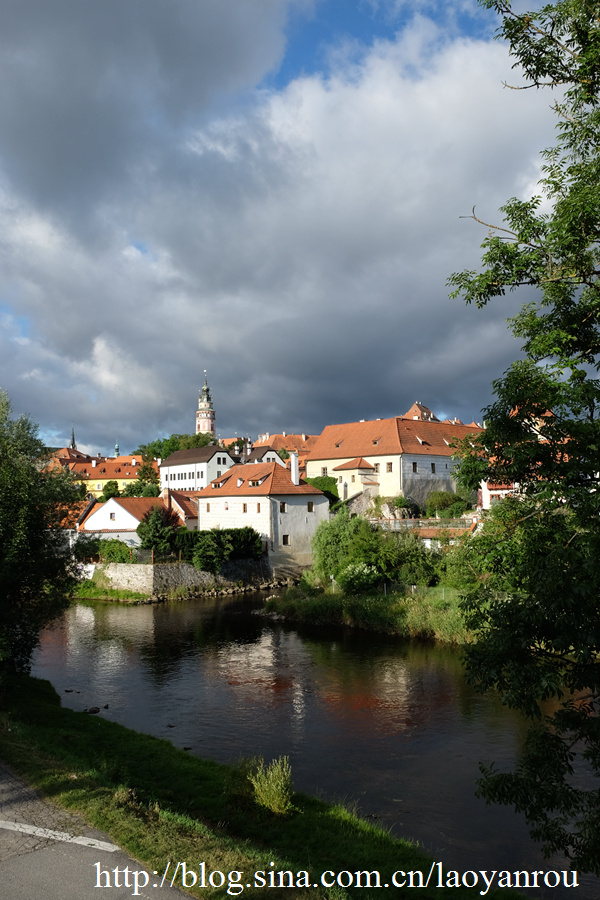 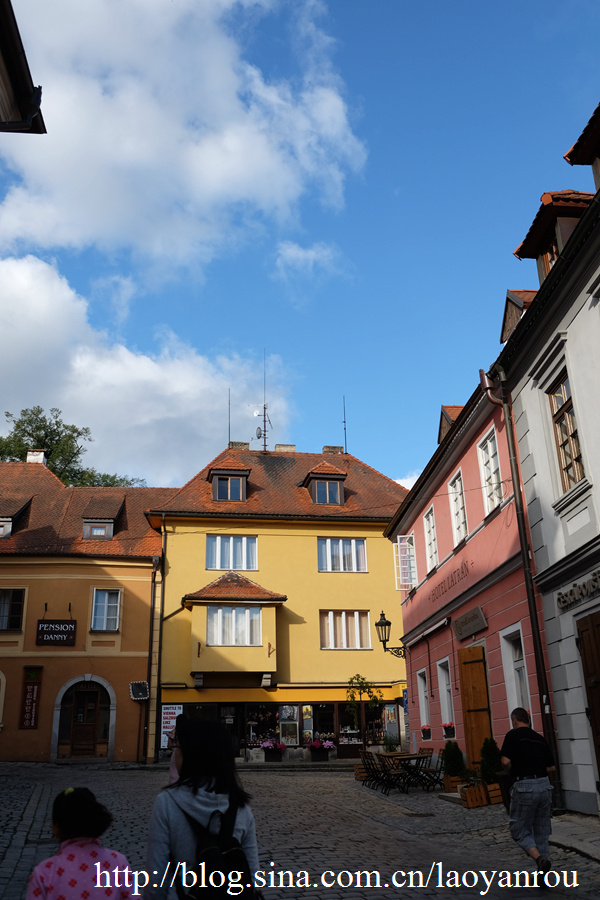 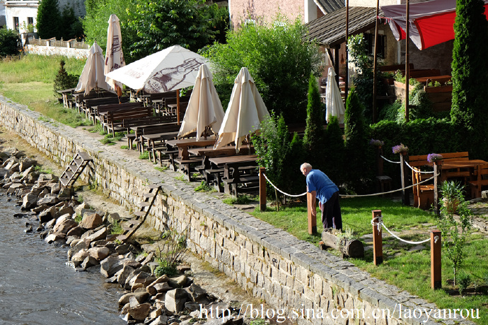 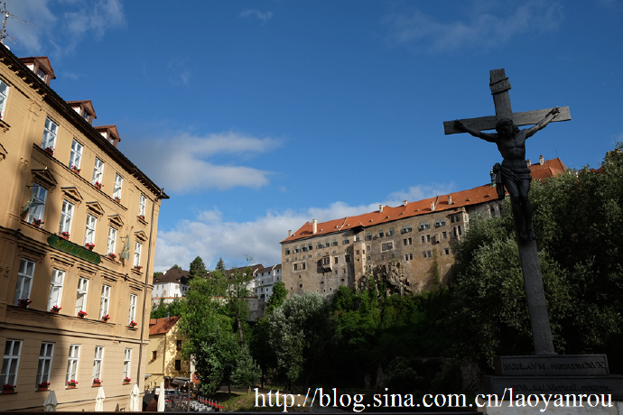 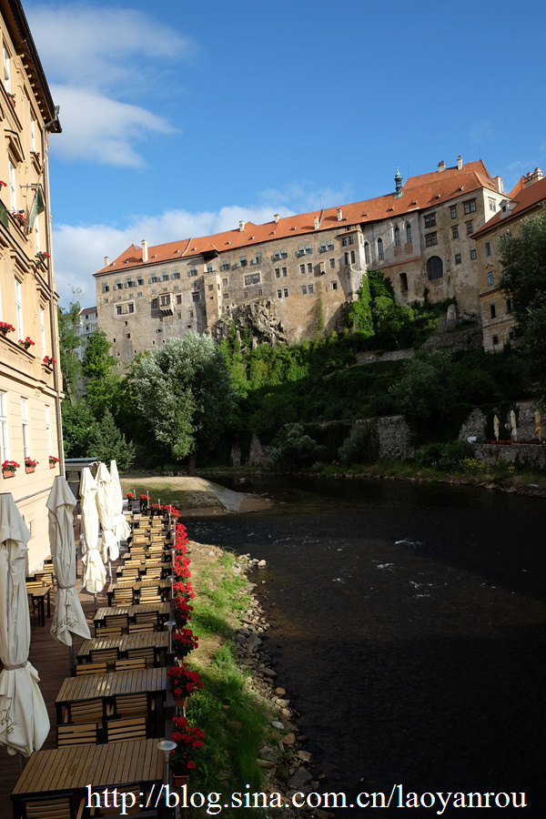 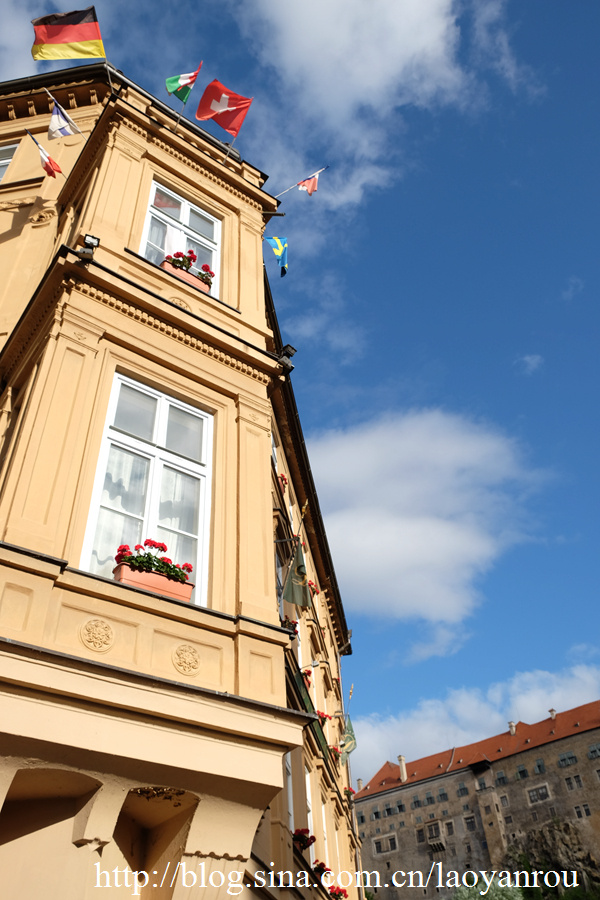 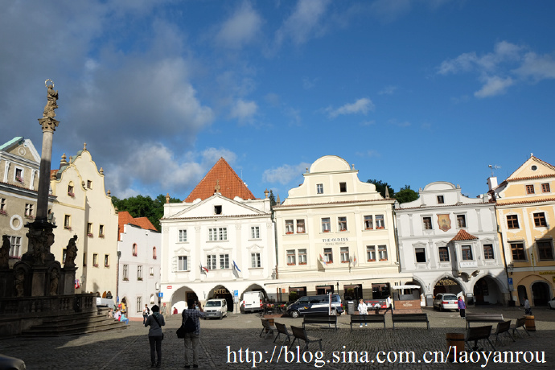
来之前做了功课，得知CK小镇历史上曾经历了13世纪南波希米亚豪族维特克家族、14世纪时罗热姆韦尔克家族及18世纪施瓦岑贝格家族三代统治和潜心经营才形成了迄今为止融合了哥特式、文艺复兴、巴洛克式等各种艺术精华风格的复杂古堡建筑群。虽然也曾经历了战火和革命的洗礼，但在当地人“修旧如旧”的科学文物保护理念引导下，最终恢复了18世纪初的整体风貌。当我们站在小镇外的高地往下看时，只见依山而建的坚固中欧古堡威严地俯瞰着小镇芸芸众生，橘红色、青灰色屋顶的各式建筑鳞次栉比般以古堡为起点向四周蔓延生长开来，一直隐没在远方的绿荫中，圣维特教堂的巴洛克式青铜尖顶和高高矗立于旧城区中心的彩绘塔从红、灰色屋顶的低矮森林中拔地而起与城堡遥相呼应，九曲十八弯的伏尔塔瓦尔河蜿蜒穿城而过将两岸高耸的塔楼、古朴的廊桥、欧式花园以及层层叠叠的橘红色屋顶巧妙地穿插糅合为一体，着实美轮美奂。
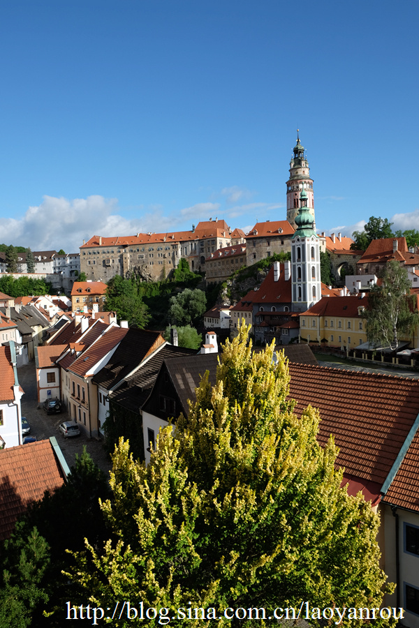
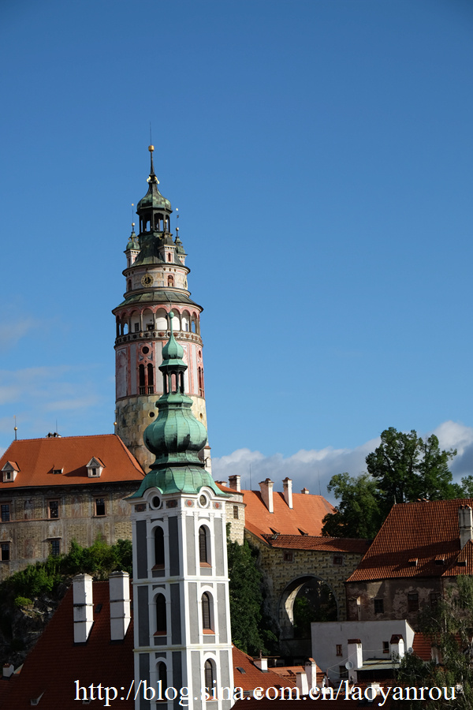
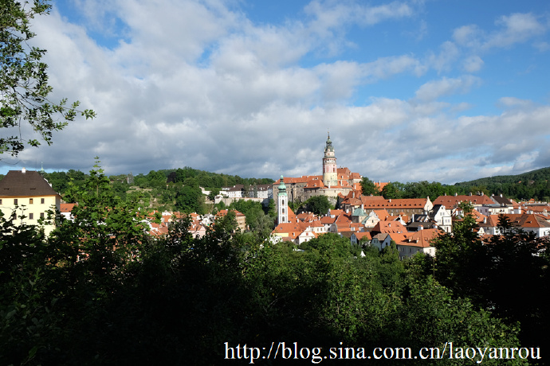
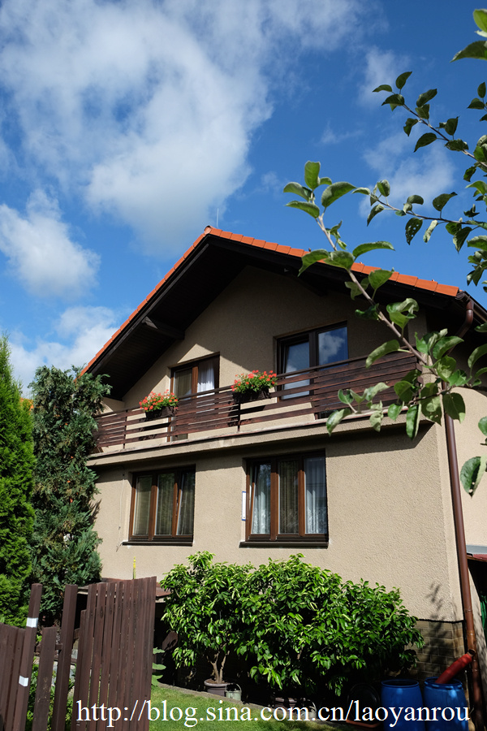
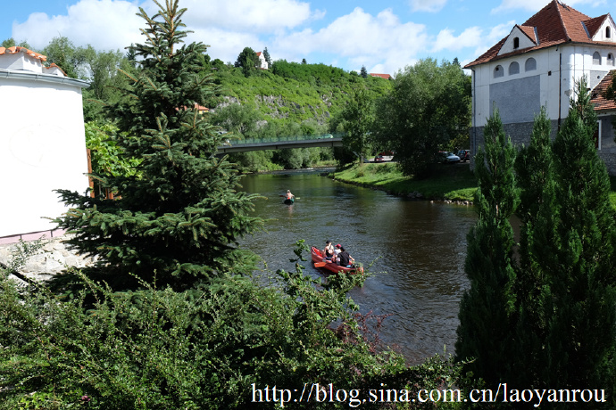
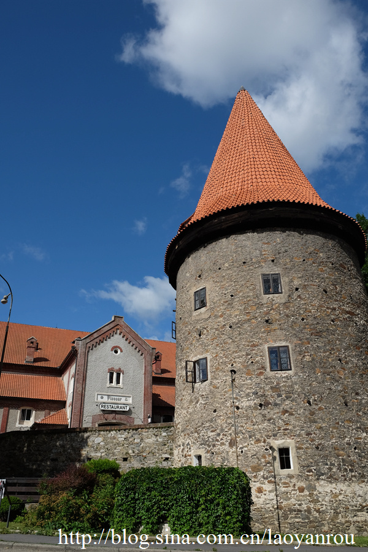
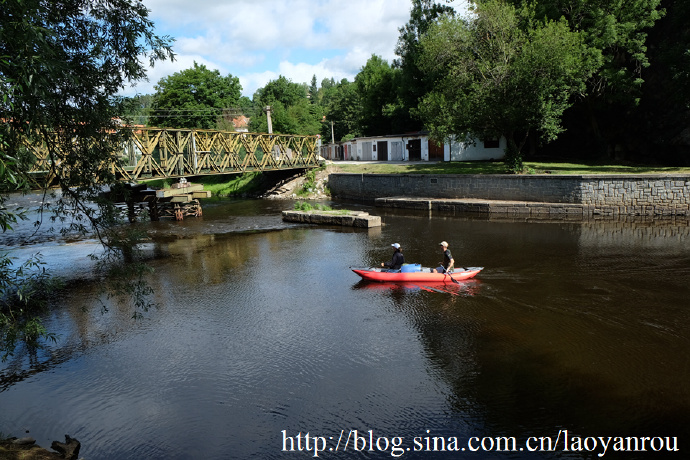
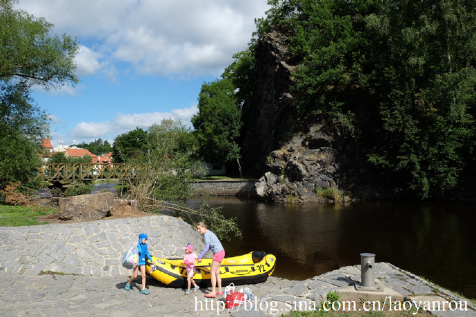
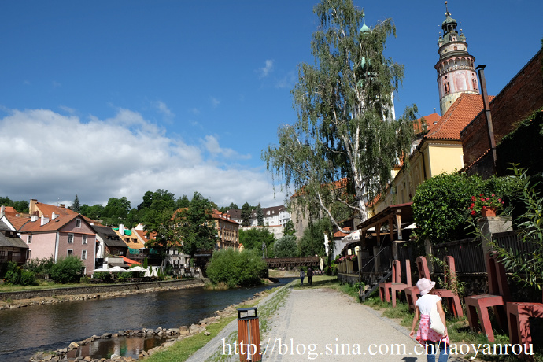
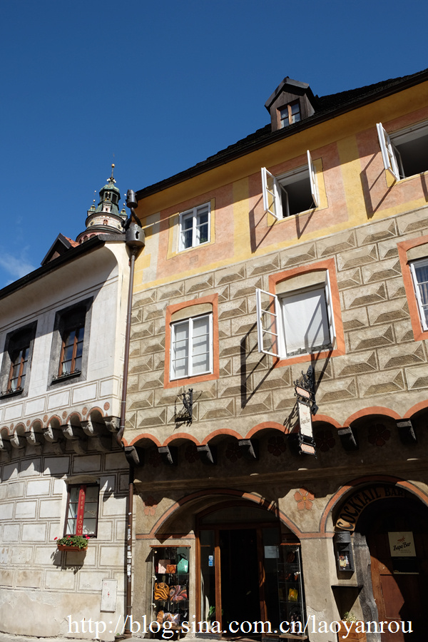
虽然早有耳闻克鲁姆洛夫城堡里面没啥看头，但是还是禁不住登高远眺、君临天下的诱惑，一行三人便顺着北丘的斜坡进入了仿若从岩石中长出来的嶙峋古堡，这座由13世纪克鲁姆洛夫君主兴建的哥特式城堡从大门走到花园总共要经过好几进广场（第一、二、三、四、五广场），五个广场自东向西一字排开，前后相接错落有致，与欧洲其他城堡普通采用的回字形布局大相径庭。每个广场四周又被三四层墙上以文艺复兴壁画作装饰的建筑围成正方形，颇有些北京四合院的风格，但却分别承担着不同实用功能比如仓库马厩、贵族宫殿、城堡剧院等等。这几个广场中第二广场的城塔是整个城堡的制高点，我们只有爬上了塔顶才真正地一览众山小，将整个CK小镇的全貌一览无遗。我们只顾着心满意足地用相机居高临下地将小城各处远景一一拍下，至于城堡各宫殿里面收藏的所谓大熊标本、黄金马车、家族徽章之类的我们压根连瞅一眼的心思都没有，倒是经过桥廊的时候多留意了几眼，所谓桥廊是指横跨两个山头连接两个广场的桥型拱廊，下部是高高支撑的桥拱，中间是走人的长廊而上部则是城堡宫殿的房间，一桥多用也算是独具一格了。原路返回快走出大门时经过了护城河似一条沟，据说下面养着两头熊象征着罗森堡家族的标志，只可惜天气炎热无缘相见。
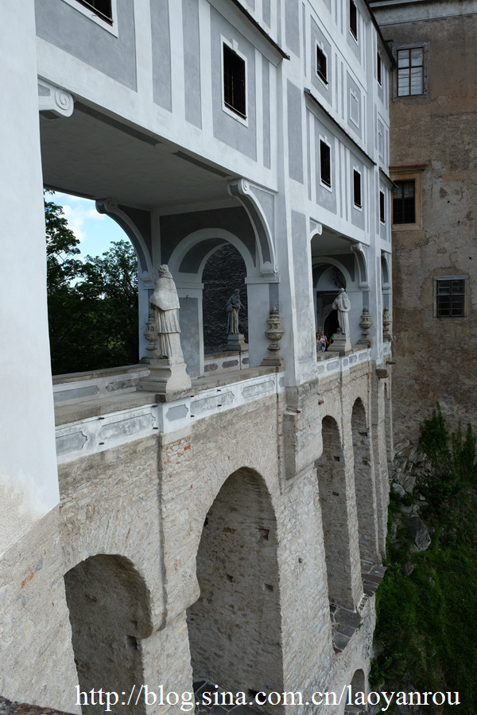
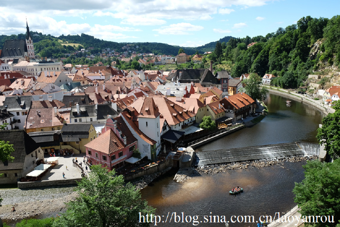
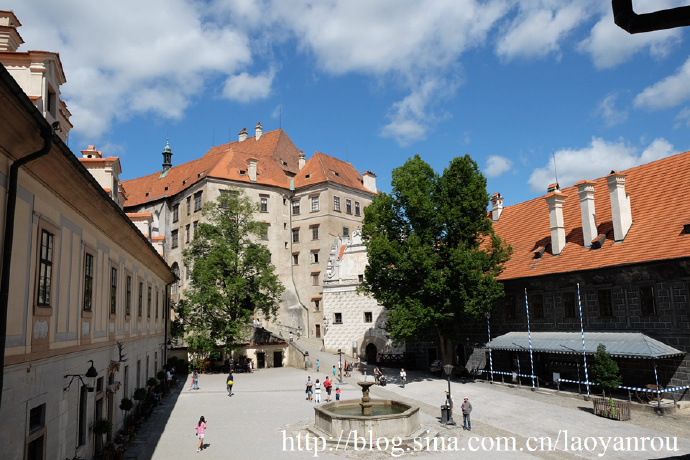
从城堡下来，我们便一头扎进了旧城区迷宫似的街道小巷里，索性抛开地图、扔掉计划，漫无目的地穿梭徜徉或许更能全方面地领略小镇的韵味。沿途经过了无数窗外鲜花绽开风格各异的小旅馆和餐馆、摆设别致的商店橱窗、竖着一根黑死病纪念柱的旧城广场、顶着橘红色圆锥形大帽屋顶的看守塔、那鲁西大街阶梯山墙和哥特式窗台、穹顶高耸肋拱交织的圣维特教堂，也眼花缭乱地欣赏过了石板街道两旁各个年代房子墙壁上装饰的刮画、巴洛克雕塑、文艺复兴格子纹饰和洛可可风格的各类壁画，还真切体验了原先清早空旷寂寥的古老街道和河畔咖啡馆如何逐渐变得熙熙攘攘、人声鼎沸起来。不仅如此，连好吃贪玩的AMY在大快朵颐地享受着肉桂卷的美味之余还不忘在旧城区河滨的儿童游乐场上乐不思蜀地将所有游乐设施玩了一轮。以上种种耳渲目染一而再、再而三地不断冲击刷新我们的对克鲁姆洛夫之美的定义和体验，若不是时光有限恐怕我们就将一辈子迷失在小镇的某个巷子深处了。
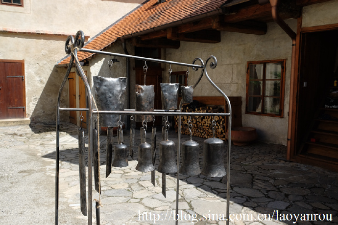
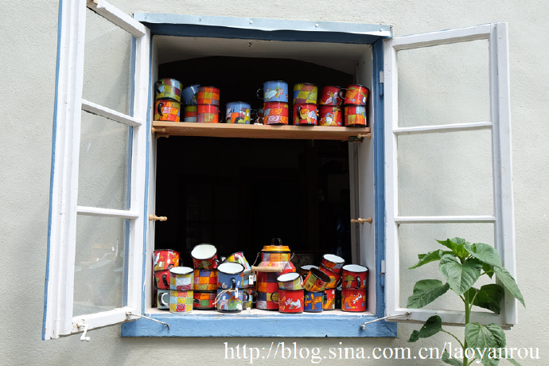
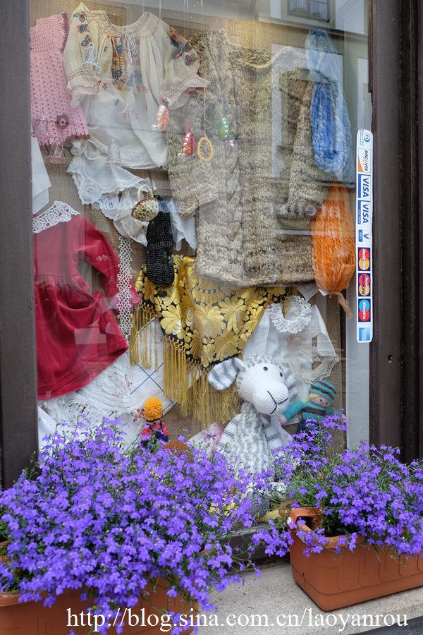
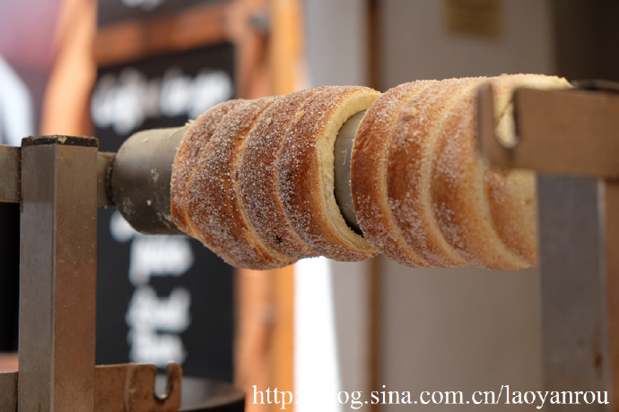
说到CK小镇的动人之处就不得不再提一下绕城而过的伏尔塔瓦尔河两岸的风景。沿着河边一路走去，阳光虽然依旧明艳照人催人汗下，但一旦走进河边的树阴里，河面上吹来的习习凉风便立马会让人感到阵阵凉意沁人心扉。淙淙流淌的“墨色”河水载着一艘艘皮划艇和游船上的游人和家庭欣然飘过，洒下了一串串银铃般欢快的笑声。虽然在河边游走的不止有我们行人还有不少平衡车和自行车，但用双脚丈量河岸的一大好处就是可以随时驻足欣赏摆放河边的一些现代雕塑作品和偶尔从绿树掩映中跃入眼帘的小露天咖啡馆。更令人惊艳的是，河边走得肚子饿了都不用找旧城区的餐馆解决，只需要在河滨一家露天大排档点上块外焦里嫩的烤猪排和比萨就能吃得满嘴流油，顺便还能吹吹河风看看河面上的靓丽风景，美哉！人生如此夫复何求！
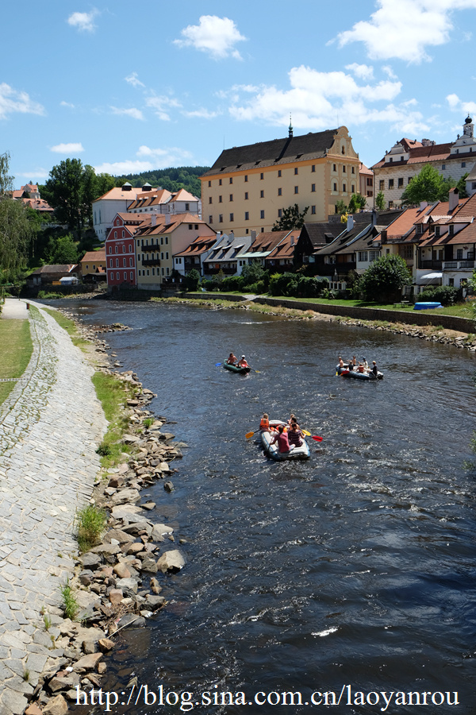
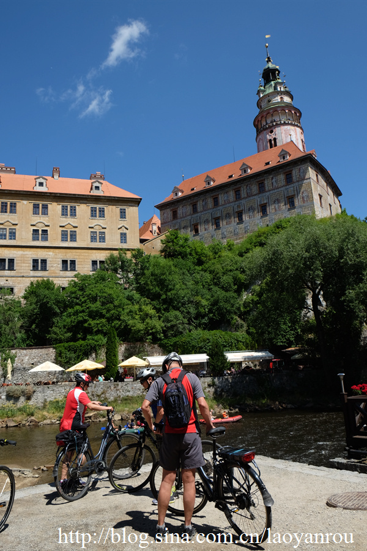
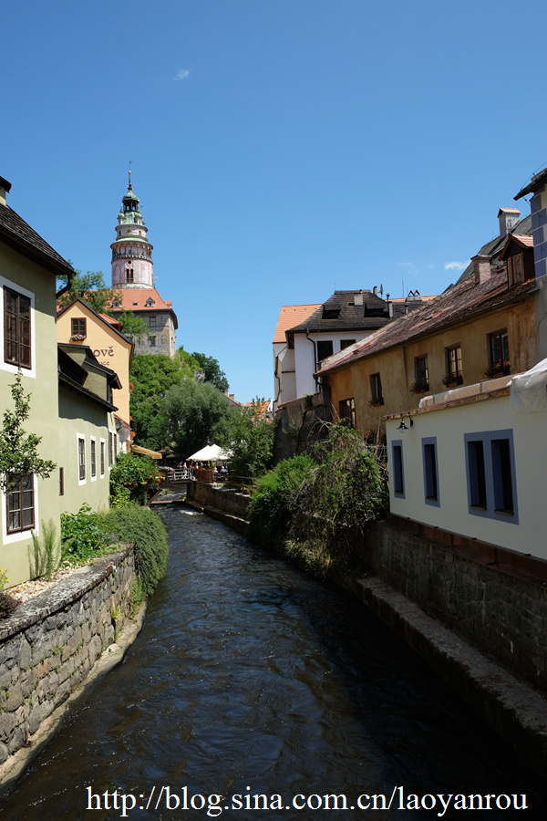
临别CK小镇的时候，回望那些绿萝遍布、墙面泛黄斑驳的老房子和悠闲品咖啡的白发老者，故地重游时是否尚在？不由得莫名地平添了几分惆怅和不舍。
要论此次中欧游最奢侈的一次交通开销，即是包车从CK小镇door to door直达维也纳的酒店，三人车费总共花了800多元，虽然要和其他一对夫妇和一位单身客一起拼车，但毕竟是奔驰商务车坐起来舒适宽敞，司机是个二十来岁的捷克年轻人开车挺猛的，在两车道的乡间小路上也能左穿右插地飚出100多公里时速，令极少晕车的LP当场缴械了，连锁引得坐后排的女士也跟着歇菜，幸好车程不长，4、5个小时后一行人便穿越了郁郁葱葱的维也纳森林抵达了音乐之都维也纳。
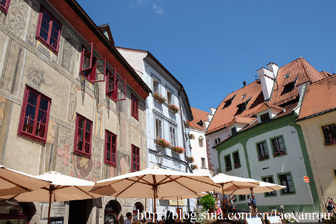
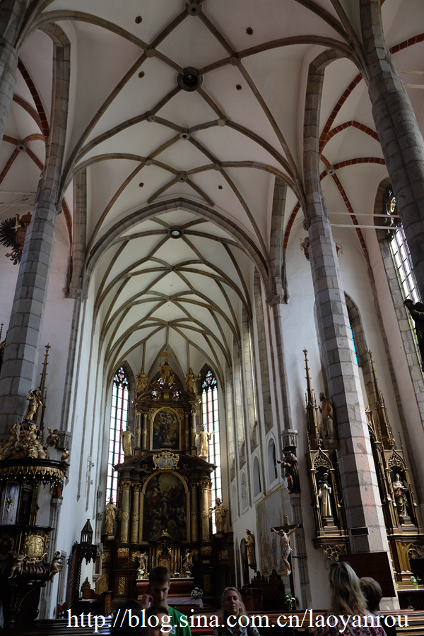
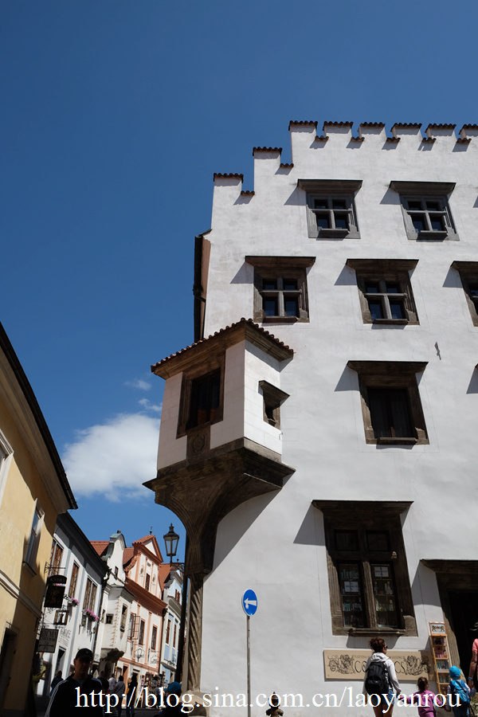
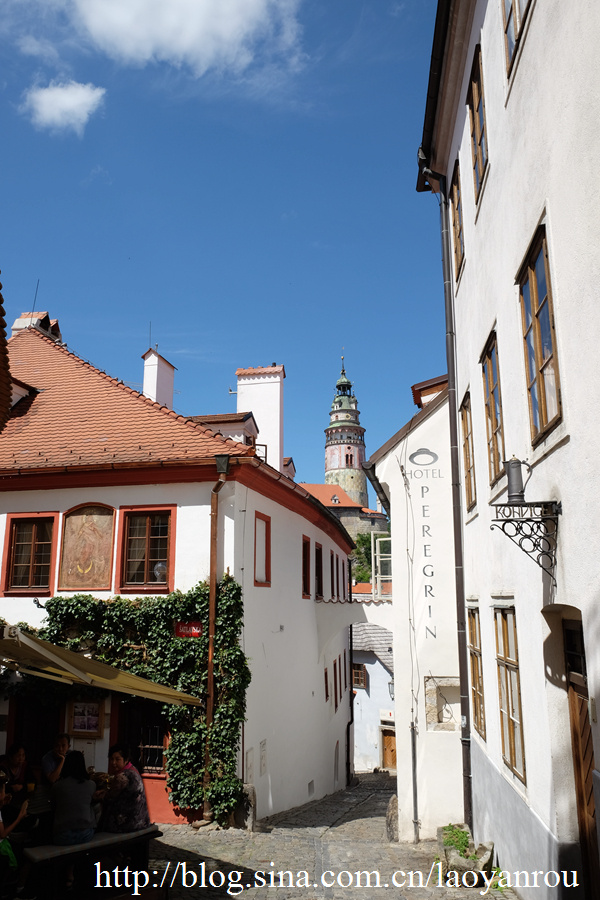
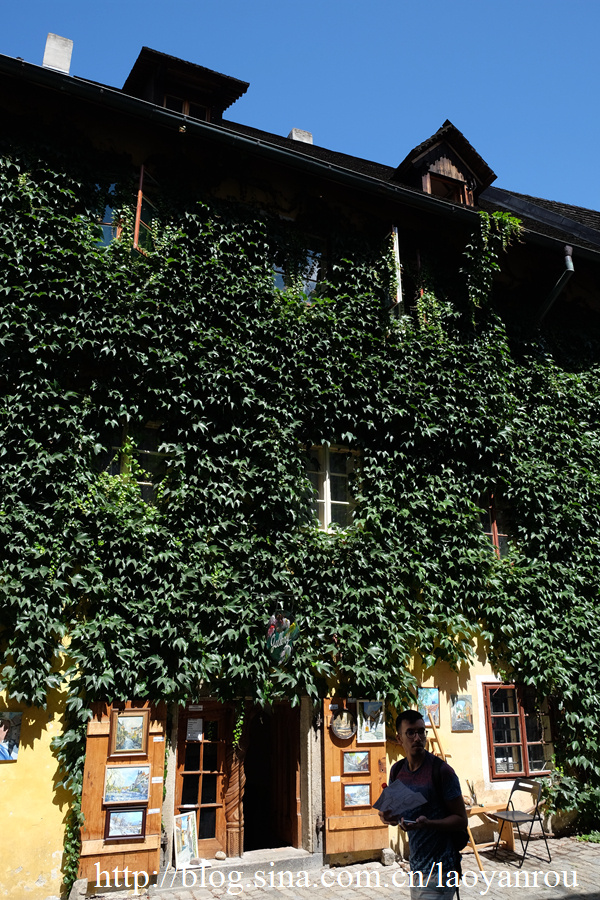
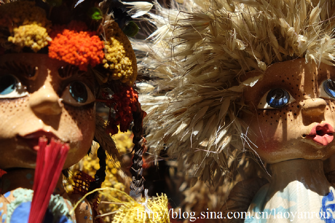
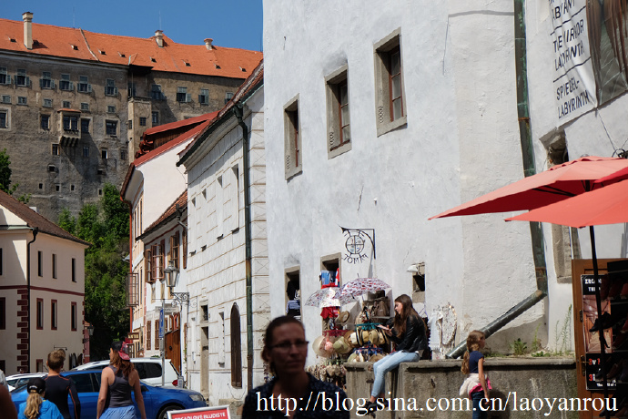
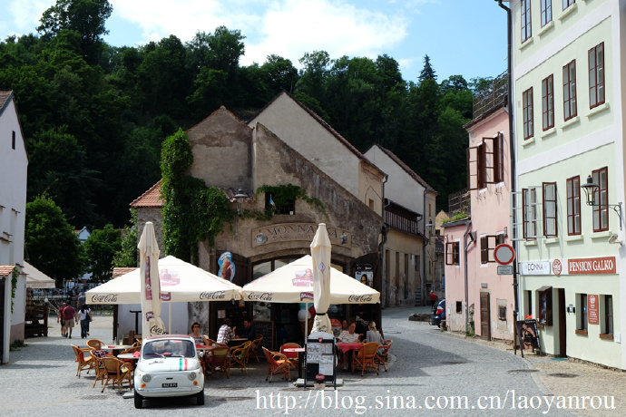
我们住的Heymi公寓位于城中心附近的玛利亚特蕾莎大街上，公寓本身所处的建筑是一栋颇有年头的老房子，搞不好曾是某位过气富豪或权贵的私人宅邸，仅从入门厅堂黯哑无光的褚红色水磨石地砖、盘旋向上的老式铸铁雕花栏杆楼梯来看，无一不表露其垂垂暮年之态。但与此形成鲜明对比的是，当我们推开两扇沉重的黑色包铁木门之后，顿时被公寓里欧式现代化的装修给惊呆了。清一色白色装修风格加上简约欧式家具，全新厨房及微波炉灶和应有尽有的餐具厨具、卫浴设施崭新洁净人性化甚至还自带洗衣机，更离谱的是仅主人房和客房面积加起来就超过了4、50平米，整个就是一间两房一厅带厨卫的欧式豪宅！在两位女士的啧啧赞叹声中我总算可以沾沾自喜地为每晚1000多人民币的房价感到物有所值了。